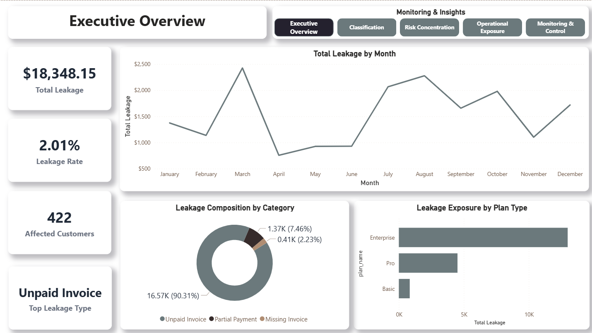
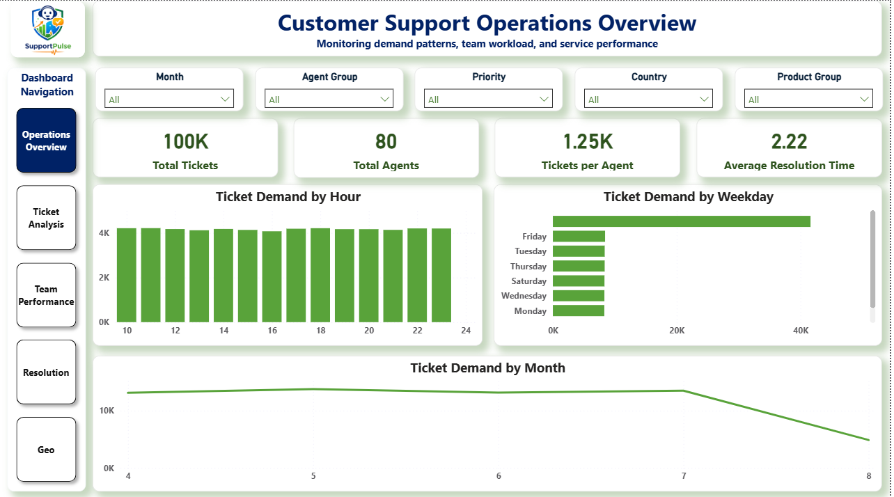
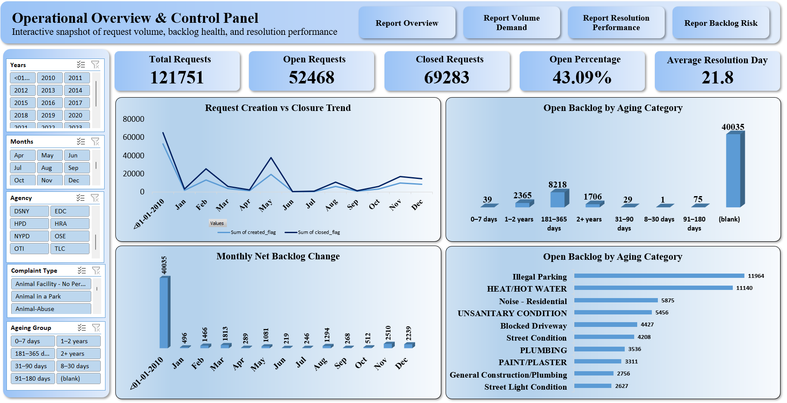
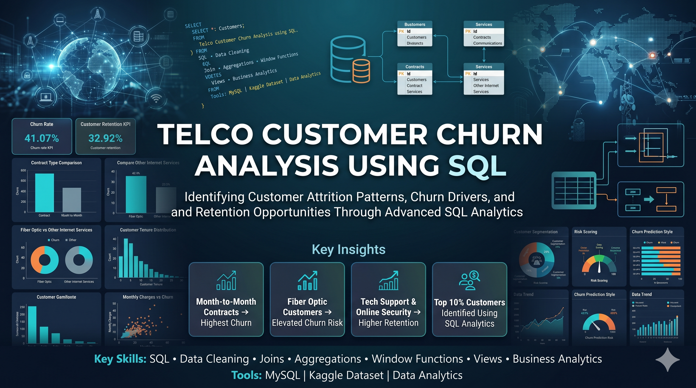
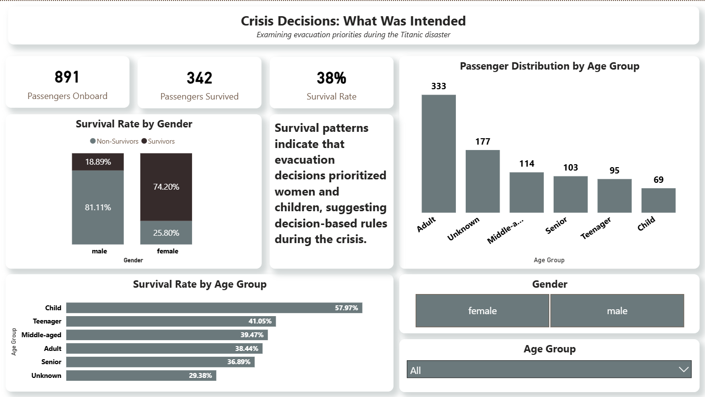

A full catalog of analytics work organized by tool and technique. Each project starts with a business question not a dataset.

Analytical controls to detect, classify, and monitor revenue leakage inside a simulated SaaS billing system. Surfaced $18,348 in exposure across three deterministic failure categories.

End-to-end operational analytics across 100,000 support tickets to surface demand patterns, workload imbalance, and SLA breach risk.

Transformed 100,000+ NYC 311 service records into a four-page navigable Excel reporting system for operational decision support.

End-to-end SQL churn analysis on a normalized telecom database — from schema design and data cleaning through to advanced segmentation queries and BI-ready views built for retention strategy support.

Three-page Power BI dashboard exploring survival patterns across gender, age, passenger class, fare amount, and family size using the Titanic dataset. Built around six analytical questions with interactive filtering and DAX-driven KPIs.